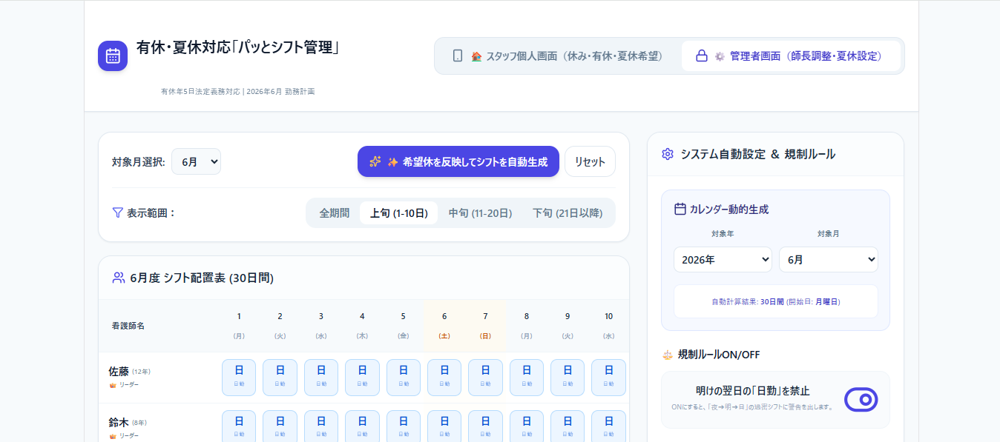
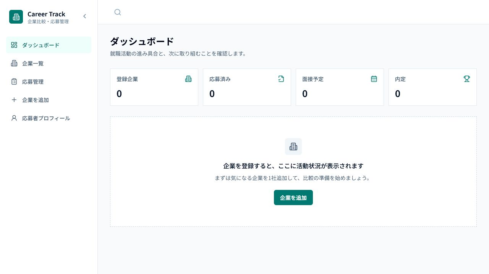

Projects / Web applications
Web Apps
実際の困りごとや管理しづらさを起点に、情報を整理し、 使いやすい形へ落とし込んだWebアプリを掲載しています。
Featured App
Career Track

Overview
概要
企業情報・応募状況・面接準備を一元管理し、今確認すべき企業と次に行うことを整理するWebアプリです。
Origin
制作のきっかけ
就職活動で企業情報、応募状況、提出期限、面接予定が複数の場所へ分散し、管理が煩雑になった経験から制作を始めました。
Problem
解決したい課題
次に行うことが分かりづらい、予定を見落としやすい、企業を比較しにくいといった管理上の負担を減らすことを目指しています。
Features
主な機能
- 企業情報管理
- 応募状況管理
- 面接予定・面接対策
- 企業評価
- LocalStorageによるローカル保存
- 実際の利用を通した継続的な機能改善
Design & engineering
工夫した点
- 応募状態を基準に一覧・検索・絞り込みを共通管理
- 評価理由が分かるルールベースの企業評価
- 既存データを壊さない後方互換性への配慮
- JSONバックアップ・復元とインポート前検証
- PC・タブレット・スマートフォンへの対応
Other Apps
その他のWebアプリ
異なるテーマを通して、情報管理や操作設計を試した作品です。


Principles
制作で大切にしていること
- 01情報を見つけやすく整理する
- 02自分が実際に困ったことから考える
- 03小さく作って改善する
- 04保存・操作の分かりやすさを重視する
- 05AIは設計・検証・改善の補助として使う
Next
他のカテゴリを見る
各詳細ページは、Portfolio v2の制作に合わせて順次追加します。
Developmentを見る準備中
Websitesを見る準備中
Contactへ進む準備中